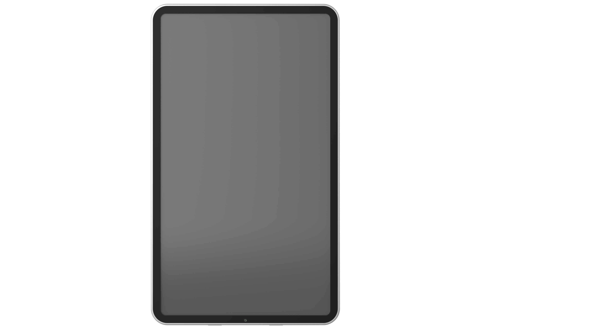

户外屏控制逻辑模拟器
基于「户外屏控制系统软件开发 流程图 3.0」· 湿度 → 温度 → 亮度 三级判断
AEPC · SUNLIGHT 916 CONTROL LOGIC
环境输入
Environment Input
相对湿度
Humidity RH
55
%RH
环境温度
Temperature
18
°C
屏体内部（NTC）估算
—
环境亮度
Ambient Lux
1000
Lux
冬雨夜 · 3°C / 96%RH / 10 Lux · 屏体 ≈3°C
冬雪午后 · -2°C / 82%RH / 2 500 Lux · 屏体 ≈12°C
夏正午 · 34°C / 45%RH / 60 kLux · 屏体 ≈60°C
夏雷雨 · 22°C / 92%RH / 800 Lux · 屏体 ≈22°C
春晴日 · 16°C / 52%RH / 18 kLux · 屏体 ≈38°C
秋雾晨 · 7°C / 94%RH / 200 Lux · 屏体 ≈7°C
重置
条件已持续 ≥ 5 分钟
WAVE 下发参数
仅 2 项
自动控制逻辑 AUTO
手动屏体亮度
Manual Brightness
50
% · 2000 nit
自动控制开启中：手动亮度锁定，跟随流程图自动调节
湿度
RH
<60
安全
60–85 中风险
≥85 高风险
温度
T
<50
安全
51–60 风扇50%
61–70 风扇75%
71–80 风扇100%
81–90 告警+100%
≥90 断电
亮度
Lux
≤30→5%
30–1k→20%
1k–10k→60%
10k–45 999→85%
>45 999→100%
执行结果
Actuation Output
风扇 PWM
Fan
0
%
屏幕亮度
Display Brightness · LMAX
5
%
200 nit
安全
Safe
无告警，风扇 0%
模组电源
Module Power
ON 输出中
故障码
Fault Code
无记录
SCREEN SIMULATION · DISPLAY BRIGHTNESS
RH 55% · 38°C · 1000 Lux

屏幕亮度
Display Brightness
5%
200 nit
风扇
Fan
0%
停止
0% · 停止
Fan output · 转速随 PWM
决策路径
Decision Trace
说明：
本模拟器只复刻流程图里的判断与动作，数值与分支按源文件原样保留（含
45999 Lux
、
85% → 85% LMAX
、
PWM/PWN
混用）；屏幕亮度按
100% LMAX = 4000 nit
线性换算（源图只有百分比）。
展开假设与未定义区间
温度传感器贴在屏体内部（NTC），因此判定用的是屏体温度：T屏体 = 环温 + 310 W 满功率功耗温升（0.075 °C/W，风扇满转削 35%）+ 日照附加（上限 8°C），按稳态迭代 4 次。工况按钮上的「屏体 ≈」即该模型输出。
湿度按修改后的口径判定：<60% 安全、60%–85% 中风险（告警、不关电源）、≥85% 高风险（持续 5 分钟后断电并记 E02）。
湿度 ≥85% 分支要求持续 5 分钟，关闭上方开关后只显示「计时中」，不触发高风险动作。
亮度判断在流程图里排在温度之后，因此仅在温度安全（<50°C）时才输出亮度动作。
亮度环境的最高档按源文件写作「> 45999 Lux」触发一级调节（95% → 100% LMAX，即 3800 → 4000 nit）。
屏幕亮度按 100% LMAX = 4000 nit 线性换算：5% → 200、20% → 800、60% → 2400、85% → 3400、100% → 4000 nit。
WAVE 只下发 2 个参数：自动控制逻辑开关、手动屏体亮度（0–100%）。自动打开时风扇与亮度均按流程图自动调节；关闭后亮度固定为手动值、风扇停转，温度再高也不降亮度、不断电（仅保留报警提示）。